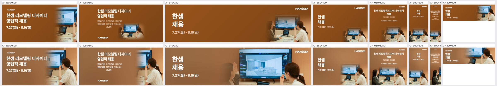
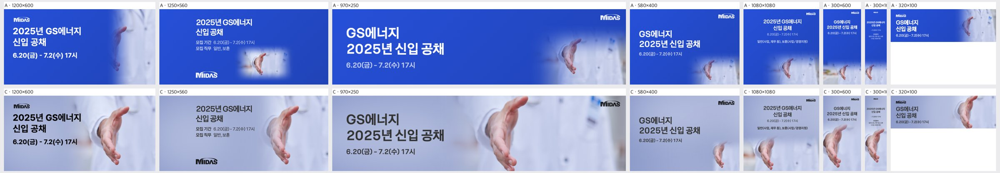
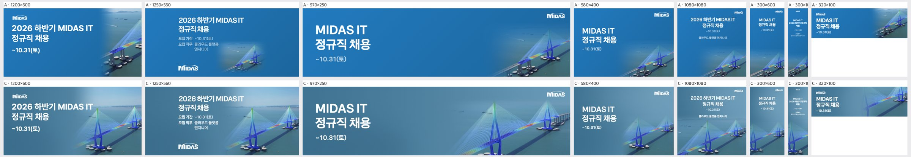
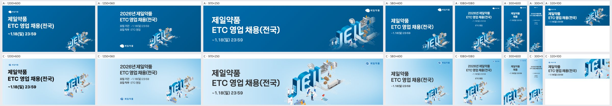
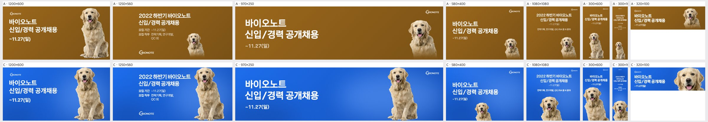
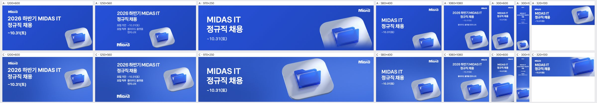
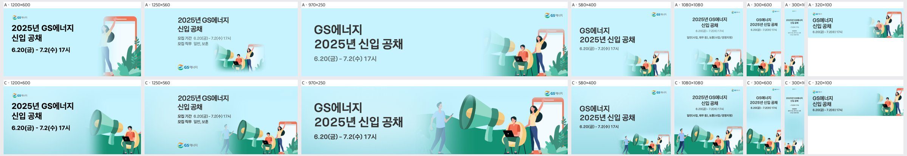
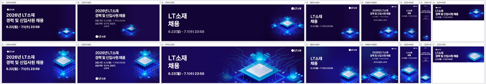
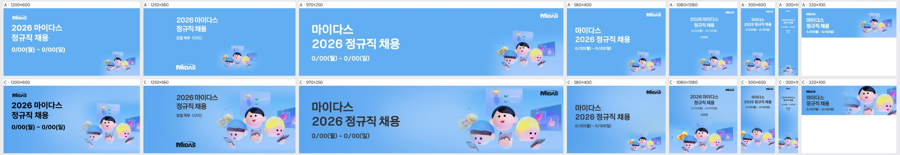
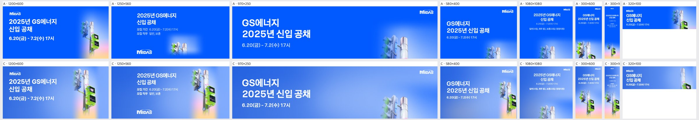

A+AI 검증 루프 — 사진·누끼·오브젝트 15케이스 × 8규격
각 라운드: A(규칙)·C(AI 판단+규칙)를 그리고 자동 수치 + Claude 비전 채점(Opus, 1~5) → 고침 → 다시. 채점은 같은 그림에도 ±0.1 정도 흔들린다. 300×1050 은 글자 크기(사용자 피그마 수정본 규칙)로 매번 2점대라 뺀 평균도 함께 적는다.
라운드별 수치(C)
| 라운드 | 채점 | 채점(300×1050 빼고) | A 나음 · C 나음 · 같음 | 그림 면적 % | 주인공 보이는 면적 % | 글자+주인공 채움 % | 규칙 자리로 감 | 얼굴 걸쳐 잘림 | 글자-그림 겹침 >2% | 비용 | 이 라운드에서 바꾼 것 |
|---|
| r1 | 3.12 | 3.23 | 1 · 14 · 0 | 34.1 | 21.7 | 35.8 | 26/120 | 17 | 0 | $1.241 | 첫 라운드(10-22) |
| r2 | 3.21 | 3.33 | 0 · 14 · 1 | 36.1 | 22.7 | 36.7 | 39/120 | 22 | 0 | $1.326 | 사진 핵심 부분 판정 · 보여 줄 위치·확대 후보 |
| r6 | – | – | – | 36.8 | 27.0 | 41.1 | 36/120 | 0 | 0 | $0 | 크레딧 없음 — 저장된 판단 + 자동 수치. 후보 점수 배치 · 누끼 확대 · 정수리 보호 |
| r7 | 3.17 | 3.31 | 0 · 14 · 1 | 34.2 | 26.8 | 40.8 | 40/120 | 0 | 0 | $1.318 | 10-23 크레딧 충전 후 새 판단 · r6 코드 그대로 |
| r8 | 3.08 | 3.21 | 3 · 12 · 0 | 41.2 | 27.3 | 41.2 | 26/120 | 6 | 5 | $1.337 | 빼는 얼굴은 얼굴만 밖이면 됨 · 보존 요소는 얼굴이 보이면 잘려도 됨 · AI 지면도 「색면엔 흰 글자」 · 보존 요소를 작은 단위로 판단 |
| r9 | 3.13 | 3.25 | 2 · 13 · 0 | 41.8 | 26.5 | 40.5 | 20/120 | 0 | 5 | $1.335 | 글자 쪽 지면색 4.5:1 보정(공통 지면 한 번) · 누끼와 글자 사이 간격 · 판단 응답에 묶음이 빠지면 다시 묻기 |
| r10 | 3.16 | 3.31 | 0 · 14 · 1 | 39.4 | 25.6 | 39.5 | 22/120 | 0 | 6 | $1.317 | 보낸 그림 크기로 좌표 기준 통일(가장 큰 고침) · 사람 몸 조각 금지 · 장면이 읽히는 정도를 점수에 |
| r11 | 3.25 | 3.40 | 1 · 14 · 0 | 42.2 | 24.9 | 38.7 | 3/120 | 0 | 7 | $0.768 | r10 판단 그대로 · 경계 맞춤 위치 후보 · 그림 비율로 좁힌 빈 공간 후보 |
| r12 | 3.32 | 3.44 | 0 · 15 · 0 | 41.6 | 24.2 | 38.3 | 3/120 | 0 | 5 | $0.797 | r10 판단 그대로 · 핵심 모드에서도 주인공 전체가 글자 줄 20% 넘게 깔리면 탈락(사장교 케이블·한샘 모니터 위 제목) |
처음(r7) vs 지금(r12) — 위 줄 A / 아래 줄 C
t1014-hanssem 사진r7 · 채점 3.00

r12 · 채점 3.13 — 가로형 규격(1200×600·1250×560·970×250)에서 사진을 키우는 대신 크롭 기준을 TV·오른쪽 인물에 맞춰 정장 인물이 빠지거나 손만 남음: AI가 화면(TV)을 주인공으로 판단한 것으로 추정

hr-doctor 사진r7 · 채점 3.25

r12 · 채점 3.25 — 세로·정방형 규격(1080×1080, 300×600, 300×1050)에서 손이 하단에 붙어 잘리고 상단이 빈 단색 면으로 남음 — 가로형 원본을 세로 캔버스에 넣을 때 피사체를 하단 기준으로만 정렬한 탓으로 추정

midas-team-photo 사진r7 · 채점 3.50

r12 · 채점 3.50 — A는 주황 배경이 무채색 사무실 사진과 충돌하고, 1250×560에서는 흐린 사각 박스 경계(seam)가 드러난다. C는 사진 톤에서 뽑은 청회색과 넓은 그라데이션 페이드로 이 문제를 해소했다.

t1014-asan-photo 사진r7 · 채점 3.38

r12 · 채점 3.25 — 세로형과 정사각 규격(1080×1080, 300×600, 300×1050)에서 사진이 하단의 작은 조각으로만 남아 지면 대부분이 단색 네이비로 비어 보입니다. 가로형 사진을 세로형에 맞추면서 확대(크롭)는 하지 않고 하단에 붙이기만 한 배치 규칙이 원인으로 보입니다.

midas-cablebridge 사진r7 · 채점 2.50

r12 · 채점 3.25 — 전면 틸 오버레이가 키비주얼 전체의 채도를 떨어뜨려 응력 그라디언트(핵심 메시지)가 죽는다. 원인 추정: 텍스트 대비를 확보하려고 구역 구분 없이 일괄 오버레이를 적용함.

t1014-dongsuh 누끼r7 · 채점 3.75

r12 · 채점 3.75 — 1080×1080과 300×1050에서 인물이 작게 하단에 붙고 가운데가 빈 노랑으로 남는다. 인물 높이를 텍스트 영역을 뺀 나머지에 맞추는 규칙이 정방형·초세로형에서 비중을 과소 산정한 것으로 보인다.

t1014-jeil 누끼r7 · 채점 3.13

r12 · 채점 2.88 — 가로·정사각 규격 대부분에서 키비주얼이 작게 구석에 붙어 지면이 비어 보입니다. 원본의 넓은 검은 여백과 도트 지도까지 포함한 바운딩박스로 스케일을 잡아 실제 주제부가 작아진 것으로 보입니다.

t1014-bionote-dog 누끼r7 · 채점 3.38

r12 · 채점 3.63 — 580×400·300×1050에서 개가 하단 구석에 작게 걸려 지면이 비어 보임(소형·극세로 규격에서 머리 보존 크롭이 스케일을 너무 보수적으로 잡은 것으로 추정)

abl-group 누끼r7 · 채점 2.75

r12 · 채점 3.38 — 세로형(300×600, 300×1050)에서 가로로 긴 캐릭터 떼를 그대로 크롭해 일부 캐릭터만 어색하게 남음. 원인: 오브젝트 단위 재배치 없이 단일 크롭에 의존한 것으로 추정.

midas-folder-blue 누끼r7 · 채점 3.00

r12 · 채점 3.38 — 세로형(300×600, 300×1050)에서 아이콘 스케일 규칙이 극단적이다. 300×600은 과대해 잘리고 300×1050은 텍스트·아이콘이 모두 작아 지면이 빈다. 높이 대비 스케일 대신 폭 기준 상한·하한이 없는 것으로 추정된다.

t1014-gs2025 오브젝트·일러스트r7 · 채점 3.25

r12 · 채점 3.50 — 1200×600에서 손 든 여자와 폰이 빠지고 노트북 남자 하단이 잘림 — 텍스트를 피하려고 크롭 창을 좌하단으로 고정한 탓으로 추정

t1014-lt-v2 오브젝트·일러스트r7 · 채점 3.63

r12 · 채점 3.75 — 가로형 규격(1250×560·1200×600·320×100)에서 칩이 오른쪽 끝에 걸려 잘림 — 키비주얼을 크게 키우면서 원본의 오른쪽 정렬 앵커를 그대로 유지한 탓으로 추정

midas-faces-3d 오브젝트·일러스트r7 · 채점 3.25

r12 · 채점 3.25 — 가로형과 띠배너(1250×560, 970×250, 320×100)에서 KV를 높이 기준으로 키워 캐릭터 하단(턱, 손, 휴대폰)과 유리 카드가 잘림. 주인공 박스가 아닌 전체 높이에 맞춰 스케일한 것으로 추정됨

pin-15 오브젝트·일러스트r7 · 채점 3.38

r12 · 채점 2.88 — 970×250·1080×1080에서 신호등 머리와 기둥 윗부분만 보이고 주인공인 초록 보행 신호기가 빠짐: 세로형 KV를 상단 기준으로 크롭한 탓으로 보인다(A와 동일한 결과).

t1014-asan-illust 오브젝트·일러스트r7 · 채점 2.50

r12 · 채점 3.00 — 1200×600·580×400·1080×1080에서 키비주얼이 너무 작다: 인물 그룹 전체를 담으려고 축소한 뒤 하단에 붙여 오른쪽이나 중앙이 단색으로 비어 보인다(그룹 전체 보존을 우선한 스케일 규칙 탓으로 추정)